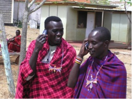

How it Works
In addition to reusing cell phones for parts, there are a plethora of ways that these phones can be positively used to impact the world! You can even choose what kind of cause your phone will go to. It’s a simple choice; trash your phone and pollute the environment, or recycle it and improve others’ lives.
For example, some cell phones are sent to deployed soldiers to allow them to contact their families. Cell Phones for Soldiers is a nonprofit organization dedicated to providing cost-free communication services to active-duty military members and veterans. Visit www.cellphonesforsoldiers.com for more information.
In addition, phones are an integral component in helping to curb the spread of malaria-a huge issue in Kenya. Data from the origins of users' calls help researchers decipher where people who have malaria may have been at the time of infection. Yet, because individuals there generally don’t have the means to acquire their own phones, this process largely depends on the use of phones donated through recycling. Click here for more information on this effort.
Recycled cell phones can be used to help victims of domestic abuse and elderly individuals as well. The phones can be turned into emergency only devices that help these people get access to immediate help. www.securethecall.org details this process.
Photos courtesy www.worldofstock.com, www.visionair.nl, and www.securethecall.org.